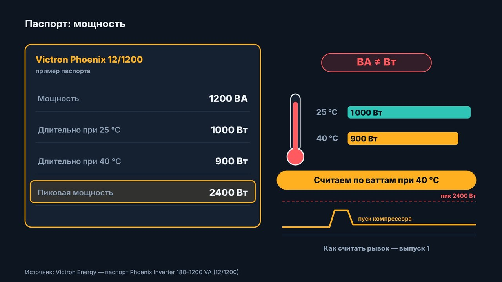

Алгоритм дома
Пошаговые расчёты для дома, которому не страшны отключения
Разбираем, как посчитать и собрать резервное питание, выбрать аккумулятор и инвертор, не переплатить и не рисковать проводкой. Каждый расчёт — по шагам, с формулами и источниками.
Посчитать резервное питание Читать алгоритм С чего начать? Помощник
Помощник — подсказка для новичков: четыре вопроса о вашей квартире или доме, и он покажет, какие выпуски и калькуляторы подходят вам.
Алгоритмы
 Выпуск 1 · электричество
Резервное питание квартиры: расчёт по шагам
Холодильник, роутер, свет и ноутбук на 6 часов отключения: какой нужен аккумулятор и инвертор.
Выпуск 1 · электричество
Резервное питание квартиры: расчёт по шагам
Холодильник, роутер, свет и ноутбук на 6 часов отключения: какой нужен аккумулятор и инвертор.
 Выпуск 2 · электричество
Зарядная станция или свой комплект: что выгоднее
Цена за ватт-час, расширение, скорость зарядки, переключение при отключении и ремонт.
Выпуск 2 · электричество
Зарядная станция или свой комплект: что выгоднее
Цена за ватт-час, расширение, скорость зарядки, переключение при отключении и ремонт.
 Выпуск 3 · отопление
Резервное питание газового котла
Чтобы дом не остыл без света: аккумулятор, инвертор, фазировка и безопасное подключение.
Выпуск 3 · отопление
Резервное питание газового котла
Чтобы дом не остыл без света: аккумулятор, инвертор, фазировка и безопасное подключение.
 Выпуск 4 · интернет
Резервное питание роутера
Интернет без света: что питать, мини-ИБП на 12 В или power bank, сколько часов.
Выпуск 4 · интернет
Резервное питание роутера
Интернет без света: что питать, мини-ИБП на 12 В или power bank, сколько часов.

Выпуск 5 · железо Как устроен инвертор и как читать его паспорт Чистая синусоида, ватты при 40 °C, пик, холостой ход и почему мощным системам нужны 24 или 48 В. Выпуск 6 · железо
AGM или LiFePO4: что выгоднее за 10 лет
Циклы по паспорту, мороз и жара, потери на зарядку и сколько раз придётся покупать аккумулятор.
Выпуск 6 · железо
AGM или LiFePO4: что выгоднее за 10 лет
Циклы по паспорту, мороз и жара, потери на зарядку и сколько раз придётся покупать аккумулятор.
 Выпуск 7 · железо
Генератор или зарядная станция
Можно ли генератор на балкон, когда хватит станции, как подключить генератор к дому и зачем ему напарник.
Выпуск 7 · железо
Генератор или зарядная станция
Можно ли генератор на балкон, когда хватит станции, как подключить генератор к дому и зачем ему напарник.
СкороКакую зарядную станцию брать: 1, 2 или 3 кВтЁмкость, мощность и зарядка под ваши приборы и отключения.
Не знаете, с чего начать? Помощник задаст четыре вопроса — квартира или дом, сколько длятся отключения, что должно работать — и подскажет, какие выпуски и калькуляторы подходят вам. Это подсказка для ориентира, а не расчёт.
Калькуляторы
Резервное питание квартиры. Введите свои приборы и время отключения — получите ёмкость аккумулятора, мощность инвертора и ток в проводах.
Открыть калькуляторСколько ватт потребляет. Холодильник, котёл, роутер, телевизор, насос скважины, чайник — паспортные цифры конкретных моделей и кнопка «в калькулятор».
Открыть таблицуКак мы работаем
Цифры из первоисточниковПаспорта и даташиты производителей, нормы и ведомства по безопасности. Что не подтвердилось — не попадает в ролик.
Формулы открытыКаждый шаг расчёта виден, его можно повторить с калькулятором или на бумаге.
Безопасность прежде всегоОтдельно говорим, что можно сделать самому, а что — только электрику.